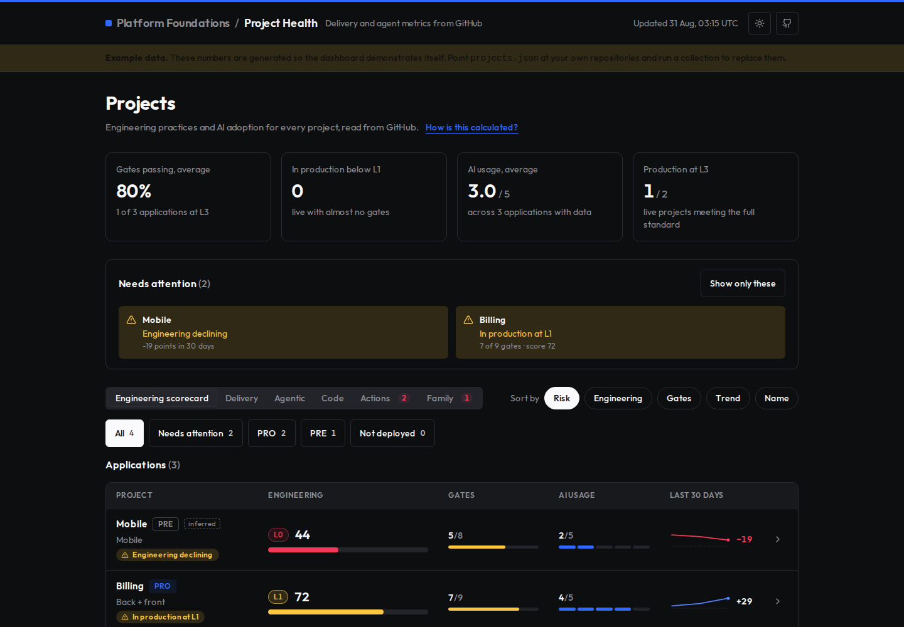
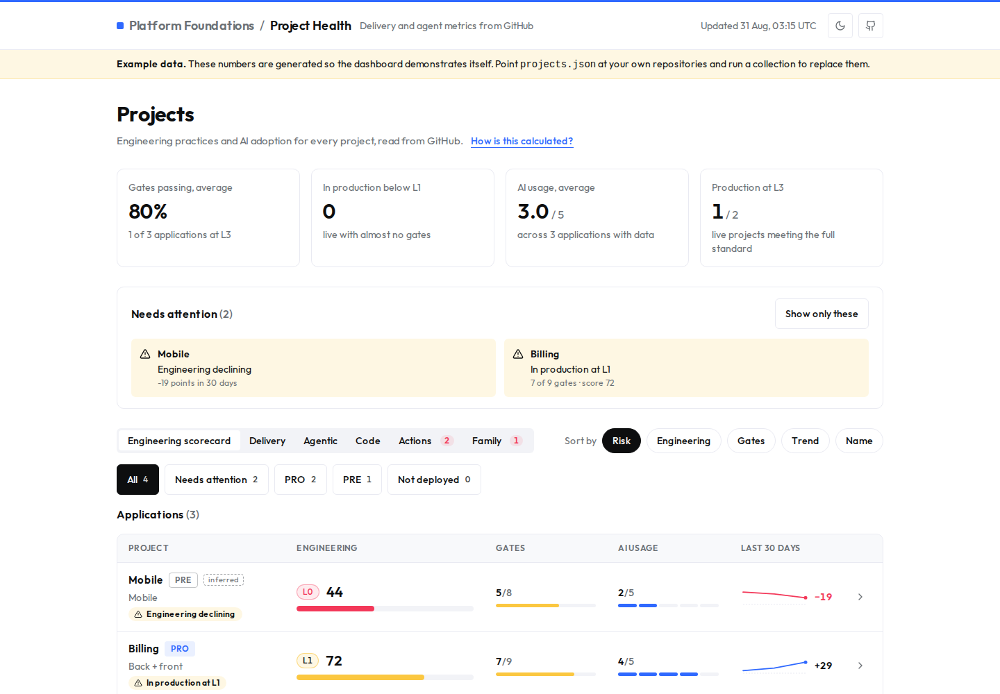
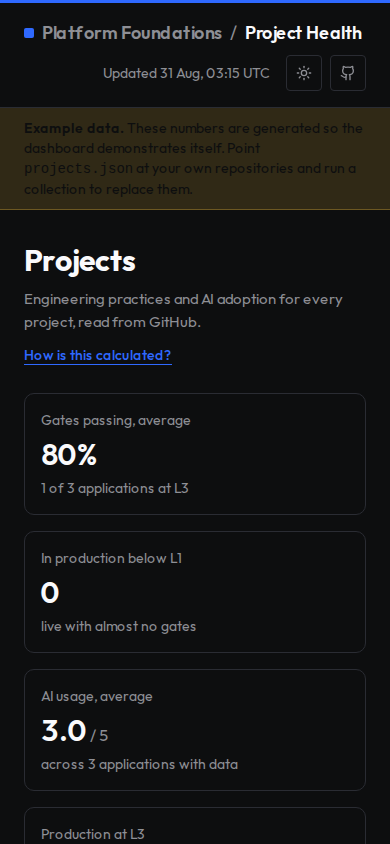
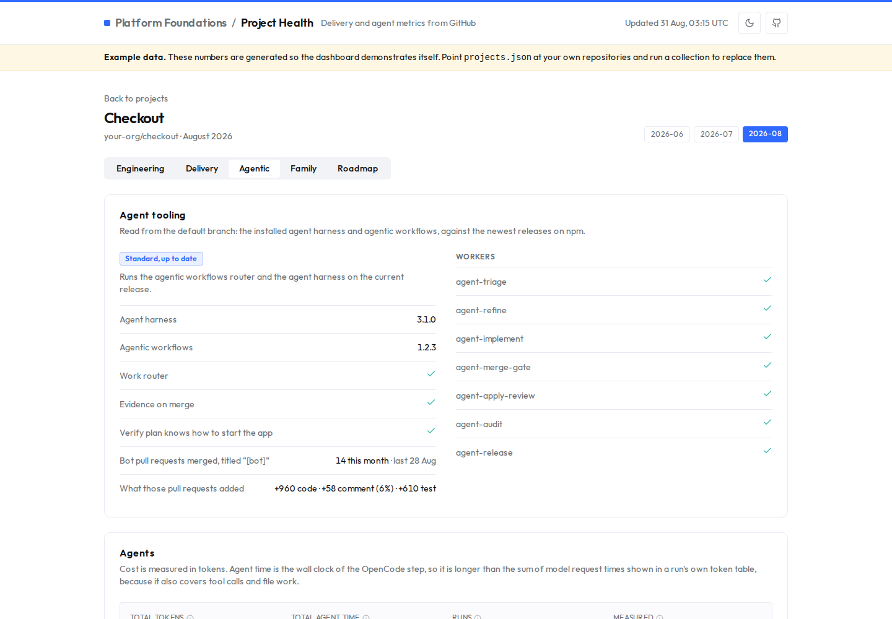
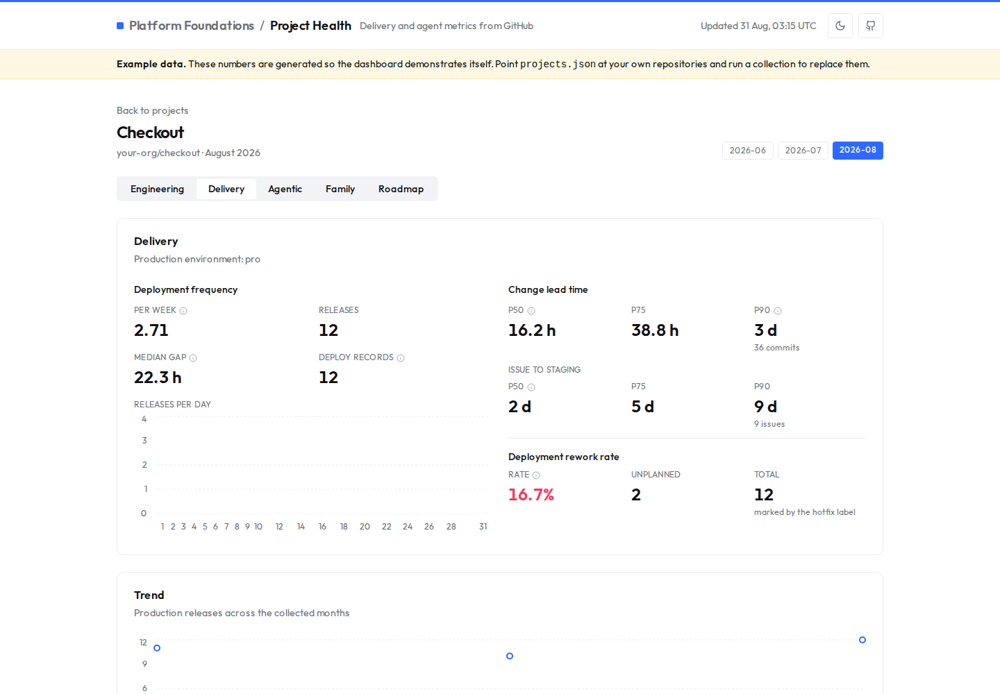

Manual usability and UI/UX audit · #227 English review material · actual app evidence, public references and original illustrative proposals.
Report Before/after Reference review Acceptance specification Interactive proposal Download single-file proposal Filter screenshot names Serve this folder to browse the gallery. Images open at full resolution. Source screenshots may retain the language of the original content; proposals use sample data.
Reference captures references/health-attention-filter.png references/health-demo-desktop.png 
references/health-overview-dark.png 
references/health-overview-desktop.png 
references/health-overview-mobile.png 
references/health-project-agentic.png 
references/health-project-delivery.png references/health-project-engineering.png references/health-project-mobile.png references/health-project-roadmap.png references/health-roadmap-dark.png references/health-roadmap-mobile.png references/platform-app-hub.png references/platform-app-preview.png references/platform-home-desktop.png references/platform-home-mobile.png references/platform-process-desktop.png Current application evidence 00-lighthouse-reference-desktop.png 01-account-desktop-dark.png 01-account-desktop-light.png 01-account-mobile-dark.png 01-account-mobile-light.png 01-login-landing-system-light.png 02-overview-desktop-dark.png 02-overview-desktop-light.png 02-overview-mobile-dark.png 02-overview-mobile-light.png 03-repositories-desktop-dark.png 03-repositories-desktop-light.png 03-repositories-mobile-dark.png 03-repositories-mobile-light.png 04-issues-desktop-dark.png 04-issues-desktop-light.png 04-issues-mobile-dark.png 04-issues-mobile-light.png 05-project-desktop-dark.png 05-project-desktop-light.png 05-project-mobile-dark.png 05-project-mobile-light.png 06-issue-desktop-dark.png 06-issue-desktop-light.png 06-issue-mobile-dark.png 06-issue-mobile-light.png 07-inbox-desktop-dark.png 07-inbox-desktop-light.png 07-inbox-mobile-dark.png 07-inbox-mobile-light.png 08-runtime-desktop-dark.png 08-runtime-desktop-light.png 08-runtime-mobile-dark.png 08-runtime-mobile-light.png 09-health-desktop-dark.png 09-health-desktop-light.png 09-health-mobile-dark.png 09-health-mobile-light.png 10-current-board-desktop-dark.png 10-current-board-mobile-dark.png 11-exact-search-desktop-dark.png 12-long-issue-desktop-dark.png 13-return-350ms-desktop-dark.png 14-return-restored-desktop-dark.png 15-stale-after-503-desktop-dark.png 16-no-match-desktop-dark.png 17-issues-320-text-200-dark.png 18-evidence-read-desktop-dark.png 19-health-project-desktop-dark.png 20-health-run-desktop-dark.png 20-health-run-mobile-dark.png First proposal, retained for comparison proposal-board-desktop-dark.png proposal-board-desktop-light.png proposal-board-mobile-dark.png proposal-board-mobile-light.png proposal-detail-desktop-dark.png proposal-detail-desktop-light.png proposal-detail-mobile-dark.png proposal-detail-mobile-light.png